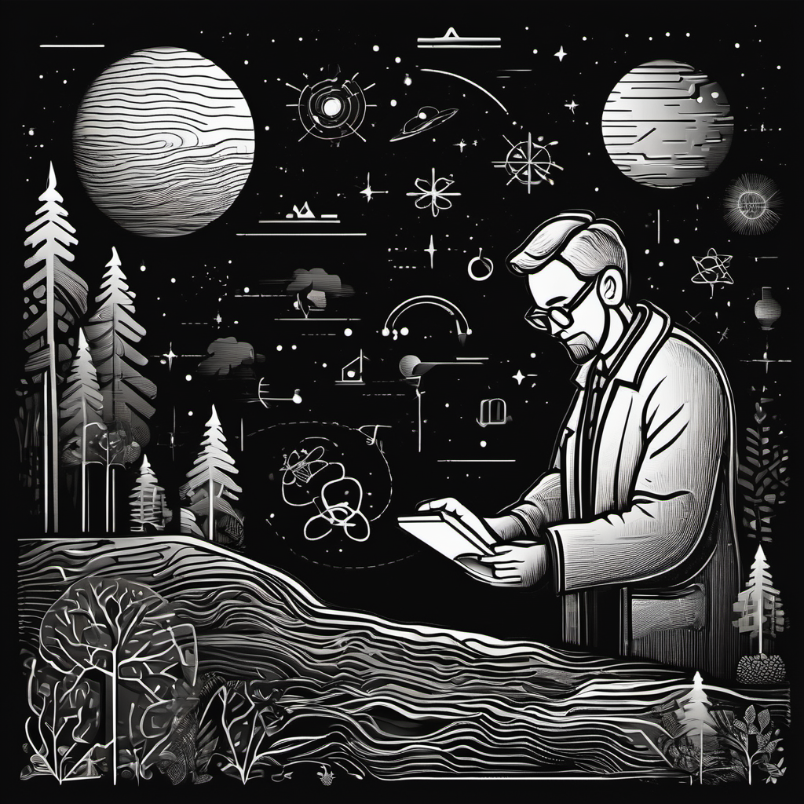

After regularly expressing my frustration about the condition of modern science in many past issues, I think it’s time to do something positive about it. [Yes, the title of this installment was inspired by Harris’ acceptance speech—I’ve kept no secret about who will get my vote in November.] In my career, I’ve written dozens of scientific manuscripts that describe experiments and a few that review the work of other scientists. Although I lack an academic appointment and broad access to grant funding, I have everything needed to contribute productively to the scientific dialog about climate. Consequently, I plan to focus at least some of my efforts on a deeper dive into the carbon accounting problems I’ve identified in previous issues. To achieve this, I plan to prepare a thoroughly researched and detailed manuscript for peer review, probably focusing on the missing carbon that is absorbed (but not re-emitted) by the rainforests. That’s an obvious accounting problem that’s difficult to argue around.
Let me say upfront that I don’t have high expectations. Because I lack the brand name of a prominent institution and have been out of the game for more than a decade, I don’t expect a positive reception. The Editorial staff of impactful journals are severe gatekeepers who rely upon insular groups of scientists for peer review. Because I’m an outsider, I expect criticism of whatever I write to be brutal, mainly since I’ll be a heretic to the religious devotees of environmentalism. At the same time, I think I have enough contacts within academic communities to get a friendly (i.e., constructively critical) reading, even if the piece never gets published. I’m beyond my career's “publish or perish” phase anyway, so I have nothing to lose, and the data is already collected.
To continue this newsletter, I’ve been collecting various climate-related articles from media outlets as future fodder for installments, so I have a material stockpile. In the future, it will be closer to a proper newsletter, shorter, and more related to current events than usual. I’ll also provide occasional updates on my publication-related “Adventures as an Educated Outsider.” Consider the exercise an experiment to see if the academic echo chamber is as bad as I imagine. In the end, if I get the expected rejection(s), I’ll find some way to release the work, even if it is only to my faithful readers. If I’ve learned anything from this Healing adventure, it’s this: Traditional publications are increasingly irrelevant. We’ll see what we see!
Stay tuned.
Jonathan